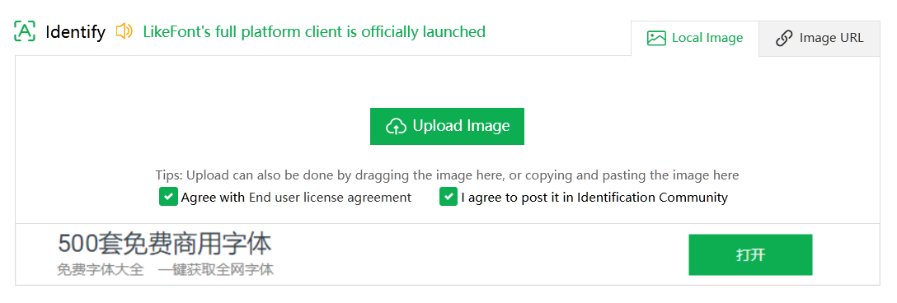
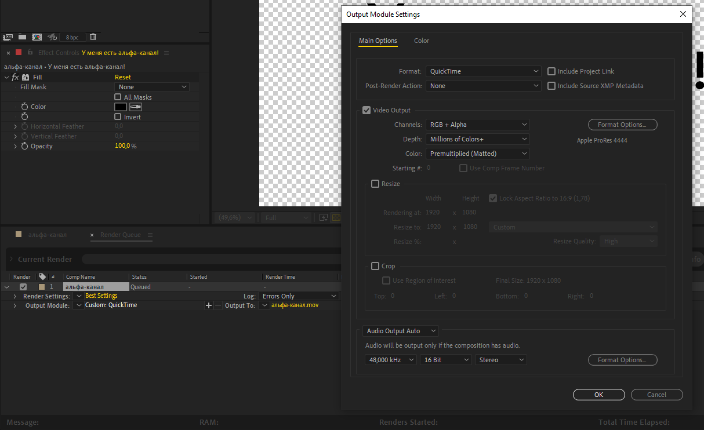

Где скачать шаблоны, программы для творчества, а также плагины к ним?
На
главной странице
в разделе ”Ресурсы" и в закрепленном сообщении в
AEChat
вы всегда можете найти наши каналы для шаблонов и программ. Например, в
AETemp
можно найти звуки, переходы и шаблоны с помощью хештегов:
#звуки #переходы #шаблоны
#плагины. А в
складе стройматериалов
вы можете найти конкретные программы или плагины для Windows, например:
#aftereffects #magicbullet
#borisfx или #twixtor
Не нашёл нужный шаблон, но у меня есть на него ссылка. Как мне его
получить?
Где взять бесплатные стоковые видео для видеороликов?
Существует множество бесплатных видео-стоков онлайн, среди которых
многие предоставляют материалы с лицензией Creative Commons Zero (CC0),
что означает возможность использования их в своих коммерческих проектах,
не указывая авторство. Перед использованием материалов, необходимо
внимательно ознакомиться с условиями использования на каждом конкретном
ресурсе. Ниже перечислены популярные источники видео:
Некоторые ресурсы могут быть заблокированы на территории РФ или других
стран, используйте
обходы
для доступа на данные ресурсы.
Где взять бесплатную статичную графику?
У нас есть канал
Design World в Telegram
с полезными материалами для графических редакторов, как Photoshop и
Illustrator. В данном канале есть навигация по каналу для нахождения
всякой всячины, например: #текстуры #шрифты
#кисти #паттерны
Если вам не хватает контента из
Design World, то ниже предоставлен список различных сайтов с бесплатными
графическими материалами:
Перед использованием звуков в коммерческих целях - обязательно прочтите
условия использования и лицензии, чтобы не попасть в неприятную
ситуацию.
Как найти шрифт по фото?
Вы можете использовать сервисом
LikeFont
для определения шрифта по фотографии. Этот сервис способен распознавать
шрифты как на латинице, так и на кириллице. Как начать им пользоваться?
Просто зайдите на сайт и загрузите своё изображение с помощью проводника
или Ctrl + V.

Хочу влиться в After Effects, с чего мне начать?
Для изучения After Effects с нуля - рекомендуем пройти курс от
Ильи Зернова
для того, чтобы разобраться в интерфейсе программы и не задавать тупые
вопросы уже в начале своего пути.
Если вы задаётесь вопросом, а стоит ли переходить с одной версии на
другую: всё зависит от вас и ваших предпочтений. Желательно обновлять
периодически программы, а также сторонние плагины, чтобы исключить
особые баги и приколы древних версий. Мы не советуем устанавливать очень
старые версии программ от Adobe, если у вас относительно свежий
компьютер.
Если вы всё-таки решились обновить программу из одного года в другой, но
не знаете как это сделать без потери плагинов, то для этого вы можете
скопировать старую папку
After Effects 20XX в C:\Program Files\Adobe и
переименовать в ту версию, которую вы хотите установить. После этого вы
можете открыть установщик новой версии и выполнить установку поверх
скопированной папки.
При возникновении проблем после процедуры с копией папки рекомендуется
провести чистую установку. Очистить компьютер от прошлых установленных
версий можно через
Adobe Creative Cloud Cleaner.
Почему у меня, б%@#ь, лагает After Effects и в чём же причина?
Никто не может назвать конкретную причину этого явления, ведь всё
упирается в то, что вы делаете в вашем проекте: делаете
неоптимизированные ”эдиты", собираете простую композицию или пытаетесь
монтировать часовое видео в программе, которая изначально для этого не
презначалась.
Для начала проверьте ваш компьютер на соответствие
системным требованиям
программы, ведь для адекватной работы - необходимо как минимум 16 ГБ ОЗУ
и процессор от Intel минимум 8-го поколения или AMD Ryzen минимум 1000
серии. Но несмотря на это, можно запустить программу и на более слабом
железе, главное соблюдать минимальные требования.
Предположим, что ваша рабочая станция прекрасно соответствует системным
требованиям, но вы не учли тот факт, что вы используете сторонние
плагины. А зачастую именно сторонние плагины и есть проблема ваших
”лагов". Старайтесь не устанавливать в программу всевозможные плагины из
разных источников и не мешать в проекте сторонние эффекты с одинаковой
сутью, но от разных брендов, например BCC Camera Shake и
uni.shake, ведь они могут тормозить из-за разных принципов
просчёта кадра.
Для того чтобы выяснить, сколько времени занимает просчёт кадра из-за
эффекта, разработчики внедрили в After Effects функцию
Render Time.
Есть ещё отдельная категория проблем пользователей связанная с
оптимизацией и гигиеной проекта, касающаяся исходников видео, фото и
аудио.
Если вы используете H.264 или любое видео .mp4 с интернета
или различных видеохостингов - то переконвертируйте их в
Apple Prores 422 или DNxHR через Media Encoder
или
Shutter Encoder, так как такие видео зачастую конвертируются неизвестно во что и могут
плохо крутиться программой. Более подробную информацию про область
применения различных кодеков вы можете посмотреть в видео от
VideoSmile.
Если у вас используются видео-исходники с переменным FPS, то такие видео
также надо переконвертировать через вышеназванные утилиты в постоянный
FPS. Этот совет касается и видео с переменным битрейтом.
Все аудио, использующиеся в проекте, стоит перевести в
.wav, ведь оно может проигрываться рывками, замедленно или
с другими звуковыми багами.
Иногда важную роль в производительности играет накопитель, на котором
лежат исходники. Если вы с M.2 SSD ничего не почувствуете, то при
использовании тяжеловесных исходников с HDD могут начаться проблемы.
Если у вас есть SSD с большим объёмом памяти - следует перенести весь
проект туда и продолжить работу.
Как заставить After Effects использовать всю можность процессора и
видеокарты?
Вы можете задействовать весь потенциал вашего процессора, включив
функцию Multi-Frame Rendering в настройках программы. Эта
функция позволит рендерить несколько кадров одновременно, используя всю
вычислительную мощь процессора.
В настройках можно ограничить использование процессора при Multi-Frame
рендере для того, чтобы дать другим программам возможность использования
процессора.
Пожалуйста - не путайте значения и внимательно читайте пункт настройки:
25% в настройке означает тот факт, что 75% вашего процессора будет
уделено для After Effects при использовании Multi-Frame рендера. Если вы
установите в этой настройке 90%, то After Effects будет использовать
всего лишь 10% мощностей процессора и такая функция становится просто
бессмысленной.
Поговорим и про видеокарту: After Effects до сих пор не умеет полностью
использовать графический процессор (GPU), даже если сторонние эффекты
поддерживают его - программа не обязана в полной мере задействовать
видеокарту. Основное воздействие на видео и эффекты происходит с
акцентом на центральный процессор (CPU), особенно при использовании
множества различных плагинов от разных разработчиков, что может снизить
эффективность GPU-рендера.
Вы ещё спросите: а почему в Premiere Pro видеокарта спокойно
задействуется, а в After Effects через одно место? Ответ прост: Premiere
Pro и After Effects - программы для совершенно разных задач,
соответственно там используются разные подходы ко всем действиям!
Для чего некоторые пользователи ставят рендер на процессор и как это
сделать?
Использование рендера на процессоре уменьшает количество возможных
артефактов и приколов после рендера вашего проекта, нежели при
использовании псевдо-ускорения на GPU. При рендере на процессоре ваше
время рендера может незначительно измениться в худшую сторону, но
зачастую - остается плюс-минус таким же.
Для включения рендера на процессоре - перейдите в
File > Project Manager или нажмите комбинацию клавиш
Ctrl + Alt + Shift + K и во вкладке Video Rendering and
Effects вы можете выбрать на чём рендерить ваш проект.
Пункт Mercury Software Only позволяет программе рендерить
проект преимущественно через процессор, но сторонние эффекты,
принудительно использующие GPU (например Depth Scanner), всё также будут
считаться через видеокарту.
Пункт Mercury GPU Acceleration (CUDA / OpenCL) позволяет
After Effects использовать видеокарту, но программа не будет
гарантировано считать все эффекты через неё и возможны проблемы при
использовании в долгосрочной перспективе.
Для чего с каждого угла советуют ставить английский язык в After Effects
и как это сделать?
Использование английской версии программы исключает 95% проблем, на
которые вы повлиять не можете. Особенно это касается использования
сторонних плагинов, шаблонов и выражений.
Какие проблемы бывают при использовании русской версии программы:
Сторонние плагины могут сбоить из-за проблем, связанные с кодировкой,
соответственно падает стабильность программы в целом.
При использовании шаблонов или чужих проектов вы с 98% шансом
встретитесь с ошибкой
Этот проект содержит ошибки выражений из-за того, что
выражения берут значения слоев на локализации, которым пользовался
автор проекта.
Для быстрой смены языка After Effects на английский язык вы можете
создать пустой текстовый документ с названием
ae_force_english.txt и поместить в папку "Документы" вашего
пользователя. Также вы можете воспользоваться командой для терминала
Windows, чтобы создать текстовый документ, если вам лень создавать
пустой файл вручную в проводнике.
Если это не помогло - переименуйте файл
after_effects_ru_RU.dat, находящийся на пути
C:\Program Files\Adobe\Adobe After Effects 20XX\Support
Files\Dictionaries\ru_ru
на after_effects_en_US.dat
Я принципиально установил After Effects на русском языке, но не знаю,
как звучат эффекты на английском языке
А зря, ведь могли бы и сменить язык. В раскрывающемся списке расположен
список перевода эффектов.
Перевод и наличие эффектов может отличаться в зависимости от версии
программы
Перевод стандартных эффектов с русского языка на английский
Предпросмотр идёт как будто в slow motion, что делать?
Для начала проверьте настройки вашего окна Preview и убедитесь, что
параметр FPS установлен на Auto и что две опции кэширования
Cache before playback и
If caching, play caching frames активированы. Это позволит
воспроизводить предпросмотр из кэша, минуя рендер в реальном времени, и
при необходимости сохранять данные на диск или оперативную память, в
зависимости от текущего состояния кэша.
Если у вас имеется достаточный объем оперативной памяти или возникают
проблемы с записью кэша на диск, вы можете выключить опцию кэширования в
Edit > Preferences > Media & Disk Cache.
Иногда возникают ситуации, когда при использовании беспроводных
наушников или неправильного аудиовыхода программа пытается
синхронизировать изображение и звук, но получается всё через одно место.
В таких случаях рекомендуется либо обновить аудиодрайверы, либо изменить
аудиовыход на другой и уменьшить задержку (Latency) в
Edit > Preferences > Audio Hardware .
Почему это так происходит? Если вы пытаетесь воспроизвести предпросмотр
композиции, предварительно не кэшируя, то ваш ПК попытается просчитать
каждый кадр на лету. Иногда это удаётся и без тормозов, если проект
несложный, но чаще всего при сложных сценах After Effects просто не
успевает просчитать кадр до тех пор, пока он не появится на экране. В
окне Info вы всегда можете посмотреть информацию о текущем
FPS вашего предпросмотра.
Если предпросмотр будет воспроизводиться не в реальном времени - в окне
будет информация о NOT Realtime с текущим фреймрейтом.
Видео в предпросмотре проигрывается в ужасном качестве!
Убедитесь, что в окне Preview установлено значение не
Auto или другое значение, отличное от Full.
Также проверьте разрешение предпросмотра именно в окне, где отображается
вид вашей композиции.
Если это не помогло, то качество предпросмотра может быть подвержено
воздействию адаптивного разрешения, которое по умолчанию включено в
After Effects.
Часто бывают случаи, когда пользователь самостоятельно устанавливает
низкое разрешение композиции и пытается увеличить предпросмотр на более
чем 100%. В таких ситуациях, естественно, изображение будет пиксельным,
ибо логику не обманешь!
Есть отдельная категория лиц, которая считает, что раз пользователь
импортировал векторный файл, то предпросмотр в After Effects будет
всегда векторным даже при увеличении в 800%. Но это не так, ведь
программа изначально не должна поддерживать векторный предпросмотр,
поэтому все объекты в любом случае будут растеризированы.
А если вы импортировали векторный файл, но при увеличении размера слоя
вы видите растеризацию, то установите пункт
Continuously Rasterize для слоя на таймлайне. Этот пункт
позволить уменьшить пикселизацию на векторных слоях, но при
использовании этой функции возможны побочные эффекты, в частности с
использованием Puppet Tool.
Как убрать пикселизацию при перемещении временной метки на таймлайне?
Как улучшить качество исходников?
Если вы пришли с TikTok или YouTube от ”мамкиных эдиторов", которые
бездумно крутят Unsharpen Mask и Sharpen на
плохом исходнике - то отказывайтесь от такой вредной привычки, ведь оно
только губит ваше видео, если вы не делаете это намеренно.
В качестве эффективного способа хоть как-то улучшить качество исходного
материала могу посоветовать использовать нейросети для этого, например
Topaz Video или Topaz Photo. Если вы не хотите
использовать Standalone-программы, то вы можете воспользоваться
сторонними плагинами, например BorisFX Continuum, в который добавили
новый AI Upscaler.
Как применить Adjustment Layer только для нужных слоёв?
Изначально After Effects не поддерживает данную функцию, но никто не
запрещал использовать костыли с помощью масок.
Если у вас установлен VFX Suite от Red Giant, то вы
наверняка слышали об SuperComp. О нём и пойдет речь: в нём
вы можете сделать заливку для нужных слоёв, а затем из этой заливки
сделать маску для Adjustment Layer. Подробнее об этом способе вы можете
посмотреть в видео ниже от
@pavelusha.
Если у вас этого плагина нет, но вы поняли смысл этих действий, то вы
можете сделать это с помощью Fill и прекомпозицией слоёв.
Почему при использовании .mp4 или H.264 дёргается изображение или
вылезают артефакты в случайных местах?
Проблемы заключаются в том, что при монтаже - никто не хочет
перекодировать в монтажный кодек, а потом натыкаются на эти проблемы.
Решение простое - перекодируйте ваши исходники в
Apple ProRes 422 через
Shutter Encoder
или Adobe Media Encoder, а потом замените их в проекте с помощью функции
Replace Footage.
После замены исходников - экспортируйте ваш проект в нужный вам тип
файла.
Если вы столкнулись с проблемой ”зелёного экрана" после импорта ваших
исходников, то попробуйте отключить опцию
Enable hardware accelerated decoding в настройках After
Effects. Для доступа к этим настройкам перейдите в
Edit > Preferences > Import.
Импортировал исходник с переменным FPS, а в After Effects длина видео
отличается, чем в проигрывателе
After Effects преобразует все кадры без пропусков на временной шкале,
потому что не понимает, с каким типом источника ему работать. В
результате чего длина видео оказывается меньше, чем хотелось бы. Для
исправления этой проблемы нужно интерпретировать исходник через
Interpret Footage > Conform to frame rate и выставить
нужный FPS, желательно совпадающий с FPS композиции в окне Project, либо
перекодировать видео через
Shutter Encoder
с постоянным FPS.
Как импортировать исходники, которые не поддерживает After Effects?
Попробуйте использовать плагин
Autokroma Influx. Он облегчает импорт некоторых файлов, которые не поддерживаются в
After Effects, Media Encoder или Premiere Pro.
Если это не решит проблему, вы можете перекодировать исходные файлы в
монтажный кодек с помощью
Shutter Encoder.
Как избавиться от ступенчатого градиента?
Для начала немного теории о том, почему градиент становится негладким:
при использовании неконтрастных градиентов возникает неприятный эффект
под названием Color Banding.
Это происходит из-за недостаточной цветовой глубины, так как 8-битное
представление не может отобразить все промежуточные оттенки цветов,
присутствующие в градиенте. Также это может быть из-за использования
видеокодеков, которые слишком сжимают цвета, например
H.264.
Ниже прикреплено видео с подробным объяснением о том, почему видео с
низкой яркостью и недостаточной контрастностью ухудшают качество вашего
видео:
В большинстве случаев эта проблема решается повышением битности в
проекте. Для этого откройте Project Settings при помощи
комбинации клавиш Ctrl + Alt + Shift + K и перейдите во
вкладку Color. Найдите пункт Bit Depth и установите 16 или
32 бита.
Учтите, что при повышении глубины цвета ресурсы вашего ПК будут
использоваться больше и возрастает риск нарваться на злейшего врага под
названием Out of Memory.
Уменьшить эффект "бандинга" может помочь и обычный шум. Для этого
создайте Adjustment Layer поверх всех слоёв и примените
эффект Noise со значением от 1 до 5 процентов.
Установил After Effects 2023 или выше, хочу повторить туториал по
Alpha/Luma Matte, но интерфейс отличается
Вы смотрите видео, в котором используется старая версия программы. В
более новых версиях After Effects разработчики обновили логику
использования масок по альфа-каналу и яркости. Дополнительную информацию
об изменениях вы можете найти на
сайте Adobe.
За время, прошедшее от выпуска этой функций, ютуберы наверняка наплодили
кучу новых видео с использованием обновленной логики масок.
Установил After Effects 23.4 или выше, но не могу понять, как отключить
автоматическое открытие панели "Свойства"
Для отключения этой функции, выберите в панели инструментов любой
инструмент, например Текст и нажмите рядом с ним
Auto-Open Panel. Возможно, эту же процедуру надо повторить
с инструментом Кисть.
Почему при использовании 3D-слоёв я не могу изменить параметры
наложения?
Вы используете рендер Advanced 3D или
Cinema 4D, для них не предусмотрена поддержка этой функции.
Для того чтобы решить эту проблему, переключитесь на
Classic 3D или используйте эффекты для композитинга.
В After Effects 2019 от KpoJluk не могу выделить объект в Rotobrush
Эта сборка действительно имеет такой баг, решается откатом до версии
CC 2018 или установкой аналогичной версии от
m0nkrus.
У меня к таким пользователям вопрос: почему вы продолжаете использовать
старые версии программ, когда в новых версиях разработчики исправляют
ошибки? Не пора ли перейти на более современные версии? Если вы
используете Windows 7 или Windows 8.1 - к вам вопросов нет.
Как продублировать композицию так, чтобы две композиции были независимы
друг от друга?
Чтобы сделать две композиции независимыми, их не нужно копировать на
таймлайне. Это происходит потому что вы копируете "ссылку" на одну и ту
же композицию и они не будет дублироваться автоматически.
Если у вас внутри композиции находятся подкомпозиции, то для быстрого
решения этой проблемы вы можете воспользоваться сторонним скриптом
True Comp Duplicator
Если у вас внутри композиции нет подкомпозиций, то вы можете
продублировать без плагинов с помощью окна Project.
Как сохранить текущий кадр в отдельный файл?
Для сохранения текущего кадра, вы можете нажать на комбинацию клавиш
Ctrl + Alt + S или перейдите в
Composition > Save Frame As > File.
У вас откроется Render Queue, если вы указали путь для сохранения, в
котором вы можете выбрать нужный формат. По умолчанию After Effects
сохраняет в формате Photoshop, но вы всегда можете изменить настройки по
умолчанию через редактор шаблонов для рендера в
Output Module > Make Template.
Если вам этот способ неудобен, вы можете сохранить текущий кадр через
сторонний плагин
FX Console. При открытии панели эффектов через Ctrl + Space вы
можете нажать на иконку фотоаппарата для сохранения текущего кадра.
После нажатия на неё, вам предложат выбрать путь для сохранения и формат
изображения.
Переместил слой из одной композиции в другую, но оно куда-то улетело из
таймлайна
Для перемещения вашего слоя на таймлайне после или перед временной
меткой в After Effects, используйте клавиши [ или
].
Почему у меня первый кадр в композиции начинается не с нулевой секунды?
Такое может произойти, если вы при создании прекомпоза нажали на пункт
Adjust composition duration to the time span of the selected
layers.
Для исправления времени начала, вам следует зайти в настройки композиции
через Ctrl + K и указать нужное число в графе
Start Timecode. В нашем случае - это 0.
Что такое "секретное меню" в After Effects и для чего оно нужно?
Разработчики из Adobe действительно скрыли некоторые функции от
любопытных глаз и поместила их в отдельную категорию
Secret. Но там ничего интересного нет. Прям совсем.
Для того чтобы его открыть, нужно открыть любой пункт настроек в
Edit > Preferences с зажатой клавишей
Shift. Учтите, что клавиша Shift должна быть
зажата перед открытием любого пункта настроек до тех пор, пока окно с
настройками не откроется. После открытия вы можете заметить и открыть в
списке настроек пункт Secret.
В данном меню находятся два пункта: Disable Layer Cache и
Ignore Sequence Rendering Errors. Первая настройка
позволяет отключить кэш слоя и автоматически очищать каждый X кадр при
рендере предпросмотра. Второй пункт позволяет программе забить болт на
ошибки при рендере последовательности изображений.
Изменение этих параметров может серьёзно сказаться на стабильности
программы. Выполняйте действия на свой страх и риск!
Данные настройки могут вам помочь, если вы испытываете проблемы с
переполнением оперативной памяти при рендере.
Часто появляется окно “Out of Memory” или “Low memory warning. RAM use
has been extended for previews”
В данном случае виден налицо факт переполнения оперативной памяти,
вызванный неоптимизированностью проекта или неправильными настройками
проекта и программы.
Убедитесь что вы не используете исходники с большим разрешением, не
используете больше 8 бит цвета в проекте и не перегружаете себя
множеством эффектов.
Для решения этой проблемы могу дать вам несколько советов: очищайте кэш
с помощью Edit > Purge > All Cache, перекодируйте
исходники в монтажный кодек, установите программу
Mem Reduct
для автоматической очистки оперативной памяти при её заполнении или по
времени и активируйте файл подкачки в настройках ПК (если вы используете
Windows):
Параметры > О системе > Дополнительные параметры системы >
Быстродействие > Виртуальная память
и укажите параметры, как на видео ниже.
Бывает такое, что некоторые неуверенные пользователи After Effects могут
выделить неправильное количество оперативной памяти в
Edit > Preferences > Memory & Performance,
неправильно прочитав настройку.
Проблема заключается в том, что пользователь зачем-то выделяет
максимально возможное количество ОЗУ не самой программе, а другим
используемым программам в фоне, думая что он выделяет всю память для
After Effects. На скриншоте показана типичная ошибка новичка, который
выделил 14.4 ГБ ОЗУ остальным программам, а для After Effects оставил
всего лишь 1 ГБ ОЗУ и впоследствии натыкается на ошибки про нехватку
оперативной памяти.
Для правильного выделения памяти - зажмите число и потяните его
максимально влево или укажите 0, нажав на число выделяемой
оперативной памяти для других программ, и нажмите Enter.
Error: Cached preview need 2 or more frames for playback
Первым делом: очистите кэш предпросмотра. Для этого перейдите в
Edit > Purge и нажмите на
All Memory and Disk Cache.
Если это не помогло, то тогда убедитесь в том, что ваша рабочая область
выделена не менее чем на два кадра.
Проблеме ещё могут мешать нагруженные эффекты, которые ваш ПК с трудом
переваривает. Особенно актуально, если вы применили множество эффектов
разных разработчиков, которые могут конфликтовать друг с другом.
Unable to allocate enough memory to render the current frame (XXXX x
XXXX @ X bpc). Either decrease the memory requirements for the rendering
frame, or install more RAM
Данная ошибка часто появляется при использовании огромных по разрешению
исходников, нагруженных эффектов или высокой битности в проекте (16 или
32 бита вместо 8). В ошибке буквально есть решение проблемы: нужно
уменьшать требования программы к оперативной памяти путём оптимизации
вашего проекта.
Обычно помогают советы, написанные выше, но если у вас действительно
мало ОЗУ, то вряд ли что-то можно сделать, не переделывая весь проект.
Либо вам всё же придётся раскошелиться и купить больше оперативной
памяти. На данный момент минимально-комфортное количество оперативной
памяти для работы в After Effects - это 32 Гб.
Effect cannot allocate a buffer larger than 30000 pixels in either
dimension
Если вы применяете эффекты Motion Tile,
CC Repetile или что-то похожее, то эта ошибка возникает
из-за того что у вас либо слишком большой исходник, либо вы слишком
перекрутили значения так, что на каждую ось для картинки вышло более
30000 пикселей, которые After Effects не может обработать.
30000 пикселей у слоя на каждую ось - это действительно максимальное
значение для After Effects. Само собой это ограничение нельзя обойти,
увы.
В качестве решения необходимо уменьшить значения для используемых
плагинов или уменьшить разрешение исходников удобным для вас способом.
This effect may slow down Preview and Export as it is optimized
Multi-Frame Render
”Не удалось преобразовать символов Unicode” или "Не удалось загрузить
псевдоэффекты"
Красный экран при использовании Twixtor или BorisFX Sapphire
This project must be converted from version XX.X.X (Windows/Mac OS). The
original file will be unchanged
The file you are attempting to open was created with After Effects
version XX.X.X (Windows/Mac OS) and cannot be opened with this version
After Effects warning: Cinema 4D must be installed in order to use the
Cinema 4D renderer
Данное предупреждение показывает, что вы не можете пользоваться рендером
Cinema 4D из After Effects, потому что у вас не установлена его "большая
версия".
Для решения проблемы - просто установите полноценную
Maxon Cinema 4D. Обычно в ошибке указывается, какая нужна
минимальная версия для запуска рендер-движка:
Для After Effects 24.1 и выше требуется установить
Cinema 4D 2024.x.x
Для After Effects 23.1-24.0 требуется установить
Cinema 4D 2023.x.x
Для After Effects старше 23.0 требуется установить
Cinema 4D R25.117 (R26.xxx не подходит)
Frame rate mismatch, or footage with fields found. For best Roto Brush
& Refine Edge results, set the composition to XX fps to match the
layer source
Данное предупреждение показывает, что вы пытаетесь сделать ротоскоп
исходника, фреймрейт которого не совпадает с фреймрейтом композиции.
Программа прямым текстом говорит, что нужно установить FPS из текста о
предупреждении для композиции через Ctrl + K.
Никто не запрещает пользовать функцией Rotobrush прямо на прекомпозиции,
если вы не хотите менять FPS основной композиции. Также никто не
запрещает интерпретировать футаж в один FPS через
Interpret Footage > Conform to frame rate в окне
Project.
Если ни один способ вам не подошёл - перекодируйте видео через любой
конвертер, например
Shutter Encoder, с нужным FPS и замените его в проекте с помощью
Replace Footage > File в окне проекта.
This project must be converted from version XX.X.X (Windows/macOS). The
original file will be unchanged
The file you are attempting to open was created with After Effects
version XX.X.X (Windows/macOS) and cannot be opened with this version
Приложение Adobe Creative Cloud, необходимое для устранения проблемы
отсутствует или повреждено
System Compatibility Report при запуске After Effects
Паниковать не надо! Для продолжения запуска, нажмите на кнопку
Continue with known issues. В таком случае запуск программы
продолжится, но возможно будут отключены некоторые функции в зависимости
от проблем совместимости.
Для отключения этого предупреждения вы можете зайти в
Edit > Preferences > Startup > Show System Compatibility
Issues.
В старых версиях After Effects эта настройка находится в разделе
General
Ошибка при запуске приложения (0xc0000142)
Ваш устаревший компьютер уже не поддерживает современные версии
программы. Для свежих версий требуется процессор от Intel минимум 8-го
поколения или AMD Ryzen минимум 1000 серии, а также поддержка инструкций
AVX2. Подробнее о системных требованиях вы можете прочитать на
сайте Adobe
Для решения этой проблемы, установите After Effects 2023 или старее из
склада стройматериалов.
Ошибка про отсутствие MSVCP140.dll, api-ms-win-crt-runtime-l1-1-0.dll и
аналогичные
Похоже, у вас не установлен
Microsoft Visual C++ Redistributable, который можно установить перед установкой или не установлены все
доступные обновления для Windows.
Не найден файл D3DCompiler_47.dll
Приложение Adobe Creative Cloud, необходимое для устранения проблемы
отсутствует или повреждено…
After Effects warning: A rendering plug-in was not found. The default
rendering plug-in will be substituted. “Ray-Traced 3D”
Вы не можете открыть очень старые проекты с использованием устаревшего
движка Ray-Traced 3D в новых версиях After Effects (от
2020). Для этого придётся устанавливать After Effects CS6 или 2019, где
эта функция доживала последние дни, и открывать проект там.
Warning: This project uses fonts that are not currently available on
this computer. Font substitution will occur until the originals become
available
Ниже предупреждения прилагается список отсутствующих шрифтов, которые не
установлены на вашем компьютере. Если автор шаблона или проекта забыл
предоставить шрифты, то их вам нужно будет найти и установить вручную.
Если вы установили шрифт, но предупреждение никуда не пропало - замените
шрифты вручную, так как шрифт автора проекта и ваш шрифт, установленный
где-то из просторов интернета, возможно, имеют разные названия и они не
могут соединиться автоматически
This project contains references to missing effects. Please install the
following effects to restore these references
При открытии проекта программа сообщает, что определённые плагины не
найдены. Такое часто бывает, если вы открыли чужой проект, а в нём
содержатся эффекты из плагинов которые у вас не установлены.
Ниже ошибки обычно прилагается список плагинов, которые отсутствуют на
вашем компьютере и их необходимо установить для корректного запуска
проекта.
Бывают такие случаи, что при открытии очень старых проектов теряются
часть плагинов, которые частично возможно или невозможно использовать в
новых версиях After Effects. Если у вас отображается ошибка о том, что
невозможно найти стандартный эффект "... Blur", то вам нужно применить
стандартный скрипт
UpdateLegacyBlurs.jsx, находящийся в
File > Scripts.
Какие настройки рендера нужно установить для вывода в социальные сети?
Каждая социальная сеть пережимает исходное видео под свои параметры,
чтобы уместить их на своих серверах. Порой установка слишком низкого
битрейта или других неверных параметров только усугубляет положение и
портит ваше видео.
Качество вашего видео будет зависеть от происходящего на экране. Если вы
монтируете "говорящую голову" или видео с минимальными движениями, то
будет достаточно установить битрейт 5-10 Мбит/с для того, чтобы вы
смогли сохранить все детали на видео. Если вы монтируете динамичную
сцену, или сцену с кучей маленьких частиц, то и 150 Мбит/с может не
хватить, чтобы сохранить все детали. Почему так происходит, объясняется
в видео ниже:
Самое главное правило, которое применяется для всех видео: сохраняйте
частоту кадров исходного видео, она не должна отличаться после
кодирования. Если вы монтируете видео с разным FPS, то выводите видео с
наименьшим из них или интерпретируйте исходники в одну частоту кадров. В
противном случае вы наткнетесь на пропуски кадров или другие неприятные
последствия.
Прежде чем загрузить куда-нибудь контент с чересстрочной разверткой,
сделайте ее прогрессивной. Например, контент в формате
1080i60 следует перевести в 1080p30, то есть
60 чересстрочных полукадров в секунду следует заменить 30 прогрессивными
кадрами в секунду.
Для того чтобы опубликовать видео на
YouTube, оно должно соответствовать требованиям площадки:
Видео должно иметь переменный или постоянный битрейт, ограничения на
него нет, но лучше соблюдать таблицу битрейтов
Контейнер должен быть .mp4
Видеокодек - H.264, аудиокодек - AAC с
частотой дискретизации 48 кГц или 96 кГц.
Видео должно содержать стерео или 5.1 каналы для аудио
Разрешение
Битрейт (24, 25, 30 FPS)
Битрейт (48, 50, 60 FPS)
8K
80–160 Мбит/с
120–240 Мбит/с
2160p (4К)
35–45 Мбит/с
53–68 Мбит/с
1440p (2К)
16 Мбит/c
24 Мбит/c
1080p
8 Мбит/c
12 Мбит/c
720p
5 Мбит/c
7,5 Мбит/c
480p
2,5 Мбит/c
4 Мбит/c
360p
1 Мбит/c
1,5 Мбит/c
Разрешение
Битрейт (24, 25, 30 FPS)
Битрейт (48, 50, 60 FPS)
8K
100–200 Мбит/с
150–300 Мбит/с
2160p (4К)
44–56 Мбит/с
66–85 Мбит/с
1440p (2К)
20 Мбит/с
30 Мбит/с
1080p
10 Мбит/c
15 Мбит/с
720p
6,5 Мбит/с
9,5 Мбит/с
480p
Не поддерживается
Не поддерживается
360p
Не поддерживается
Не поддерживается
Для TikTok требования следующие:
Площадка даёт возможность загрузить видео до 250 Мб, если вы
выкладываете с устройства на iOS и до 75 Мб, если вы выкладываете с
устройства на Android.
Контейнер должен быть .mp4 или .mov
В качестве видеокодека должно использоваться H.264
Разрешение
Битрейт (24, 25, 30 FPS)
1080p
5-8 Мбит/с
720p
2,5-5 Мбит/с
Для Instagram* необходимо соблюдать следующие условия:
Соотношение сторон видео должно быть 4:5,
16:9 или 4:3, если вы собираетесь
выкладывать в обычный пост.
Соотношение сторон видео должно быть 9:16, если
выкладываете видео для IGTV, Stories или Reels.
Видео может содержать любое количество FPS, но желательно
придерживаться стандарту 24, 25 или 30 FPS, так как при
использовании видео с 60 FPS нужно больше битрейта, а Instagram*
любит пережимать видео под себя.
Как выводить из After Effects видео в .mp4?
Вместе с выходом обновления After Effects 2023 вернулась возможность
нативно выводить в H.264, а значит - вы можете
экспортировать видео в контейнер .mp4 сразу из программы
без использования Media Encoder.
Если вам не нравится стандартный кодек, или у вас старая версия After
Effects, вы можете воспользоваться сторонними плагинами
AfterCodecs
или
Voukoder.
Как выводить .gif из After Effects?
Почему из каждого угла советуют не использовать Media Encoder для
рендера композиций из After Effects?
Если вы собираетесь вывести из After Effects небольшую композицию, то
гораздо быстрее и легче вам будет просчитать внутри программы, не
прибегая к внешнему модулю рендера.
Media Encoder при просчёте сложных сцен умеет сам останавливать рендер,
не объяснив причину. Также при рендере через Media Encoder вы можете
наткнуться на потерю исходников, различные артефакты и кривой просчёт
плагинов с потерей лицензии. Да, бывают случаи, что появляются водяные
знаки якобы от отсутствия лицензии от плагинов.
Ещё при рендере из Media Encoder - вы не получите стабильную работу
функции Multi-Frame Render, которая отлично работает при рендере из
самого After Effects.
Поэтому мы с каждого угла рекомендуем не ориентироваться на старые
обучающие видео по экспорту и не использовать Media Encoder для вывода
композиций из After Effects. Данная программа была предназначена для
совершенно другой цели: конвертация исходников из одного формата и
кодека в другой и создание прокси для Premiere Pro.
Если вам нужно поставить на очередь просчёта несколько композиций из
After Effects, то вы можете создать пустой проект-болванку,
импортировать все нужные проекты через Ctrl + I и кинуть их
в очередь рендера внутри самой программы через Ctrl + M.
Таким образом вы получите более стабильный рендер и нормальную поддержку
Multi-Frame Render.
Почему при выводе в .mp4 через встроенный кодек H.264 сохраняется файл с
памятью 1 Кб?
Это баг, связанный с ранними версиями 2023 года, который не позволял
сохранять видео в путь с кириллицей.
Обновите After Effects до 23.6 или выше, данный баг уже был исправлен
в поздних версиях
Почему после рендера контент смещается влево или вправо?
Это тоже один из старых багов программ версий 23.1, 23.2, 23.3, 23.4 и
23.5 при использовании Media Encoder в качестве рендера. Просто обновите
все After Effects и Media Encoder, желательно ещё и Premiere Pro, если у
вас имеется, до 23.6 или выше.
Как сохранить свои пресеты для рендера файлов?
Как вывести из After Effects файлы с альфа-каналом?
Есть некоторые пользователи которые хотят вывести .mp4 с альфа-каналом,
и я их разочарую: это не получится сделать (если не использовать HEVC
H.265 на macOS).
Прежде чем выводить видео с альфа-каналом, убедитесь в том, что он у вас
имеется в проекте. Для этого существует кнопка
Toggle Transparency Grid, которая подставляет сетку в виде
шашечной доски для отображения прозрачных частей в вашем проекте.
Если всё в порядке, то время переходить в Render Queue с помощью
комбинации клавиш Ctrl + M. Откройте Output Module и
установите в Format пункт QuickTime. Затем перейдите в раздел Format
Options и выберите там Apple ProRes 4444 или
GoPro Cineform в разделе Video Codec. Затем установите
параметр RGB + Alpha в пункте Channels. После выполнения всех шагов, вы
можете приступить к экспорту видео с альфа-каналом.

После рендера вы можете использовать ваше видео в последующем монтаже
видео.
Если вы хотите просмотреть такое видео, но у вас оно не открывается, то
вы должны установить сторонний видео плеер, например
VLC
или
MPC-HC. Учтите, что не все видео проигрыватели корректно выводят контент с
альфа-каналом.
Как отрендерить видео, если After Effects сбоит на конкретном участке?
Почему при выводе видео получается видео с размером 10 ГБ и выше?
По умолчанию в настройках вывода в старых версиях After Effects, где ещё
не вернули кодекс H.264, стоит контейнер AVI с параметром без сжатия.
После рендера многие новички не понимают, в чём же прикол, когда
натыкаются на очень большой файл и "неверное" расширение у видео.
Поэтому рекомендуется использовать другие варианты для экспорта,
например Quicktime, H.264 или другие кодеки, занимающие меньше места на
жёстком диске.
Если вы хотите сохранить настройки для рендера, которые вы задали, чтобы
они применялись по умолчанию для новых проектов, то существует функция
Output Module Templates.